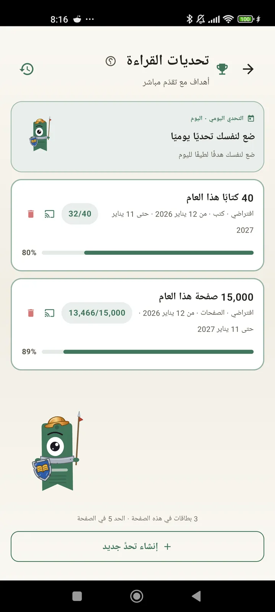

اعرف نفسك كقارئ
تحديات وبينغو وودجتات والمزيد من الميزات لتستفيد من قراءتك إلى أقصى حد. جديد في 3.7: ودجتات التحديات والبينغو.

تحديات القراءة
ضع أهدافًا حسب الصفحات أو السلاسل أو الأنواع. حتى 15 تحديًا نشطًا مجانًا، وبلا حدود مع Pro. إضافة إلى تحدٍّ يومي قابل للتخصيص لا يُحسب ضمن الحد.

التحدي اليومي
هدف جديد كل يوم. أكمل التحدي قبل منتصف الليل لتحافظ على سلسلتك.

بنغو القراءة
بطاقتا بينغو جديدتان كل شهر بخانات ذات مواضيع. أكمل صفوفًا أو أعمدة أو البطاقة كاملة.

الملخص الأسبوعي
كل يوم إثنين، لمحة عن أسبوعك: الصفحات المقروءة والوقت الإجمالي والسلسلة ومقارنتها بالأسبوع السابق.

الملخص الشهري
عند انتهاء الشهر، يلخّصه Lecturameter: الصفحات والوقت والكتب المنتهية وإيقاعك يومًا بيوم وكتاب الشهر.

ودجت البينغو Pro
بطاقة بينغو هذا الشهر، أمامك دائمًا، مع الخانات التي أكملتها والخطوط التي أنجزتها.

ودجت الكتاب مجاني
شاهد الكتاب الذي تقرؤه مباشرة على شاشتك الرئيسية: الغلاف والعنوان والمؤلف والصفحات ونسبة التقدّم، محدّثة دائمًا. قابل لتغيير الحجم ليناسب أي مكان تريده.
بجد يا صاحبي التطبيق مثل العلاج، انتقلت من قراءة صفحتين في اليوم إلى نحو 20 صفحة يوميًا وما زلت أتحسّنرأي مستخدم، وصل عبر البريد الإلكتروني

المقارنة الشهرية Pro
نظرة سريعة على أشهرك الأخيرة دون فتح التطبيق. أعمدة لصفحات كل شهر مع إبراز الشهر الحالي، لتعرف بنظرة واحدة إن كنت تقرأ هذا الشهر أكثر أو أقل من الشهر الماضي.

ودجت التحديات Pro
تحدياتك النشطة وتقدّمها على الشاشة الرئيسية. اختر ما تريد عرضه من شاشة التحديات.